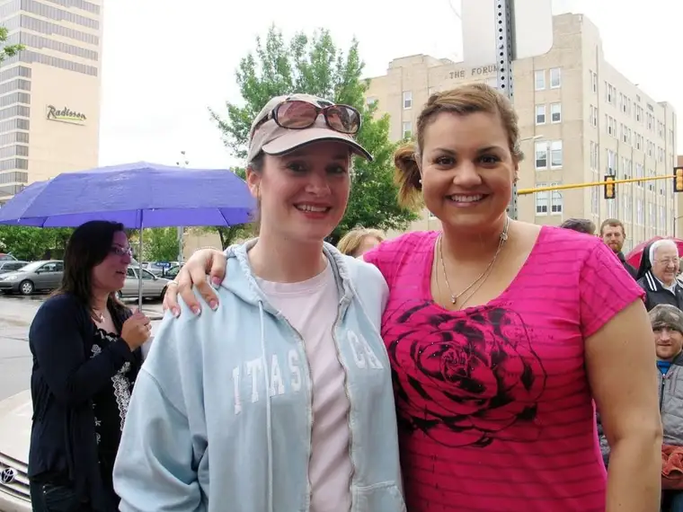
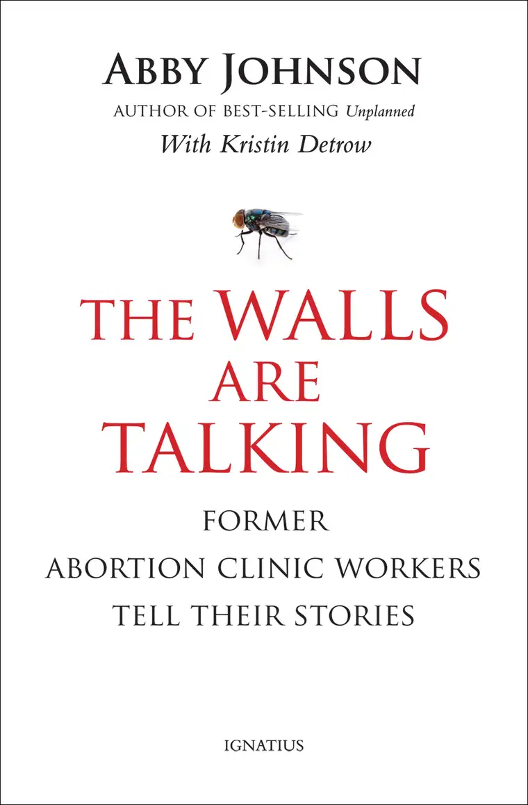

“I was wholeheartedly devoted to an industry that thrives on the premise that life is cheap.” – Abby Johnson, author of The Walls Are Talking: Former Abortion Workers Tell Their Stories
I first met Abby Johnson, former Planned Parenthood manager, when she came to Fargo, N.D., the summer of 2011, not long after her first book, Unplanned, came out.
She was in town for a conference, and after she spoke, she invited us to pray with her at our state’s only abortion facility Downtown Fargo the next day. It was a powerful experience to hear her address God as well as the escorts and workers of that facility, knowing she had been in their place just a few years before.

No one can shed light on a crisis quite like one who has experienced it themselves. God knew we needed to see deeper into this issue, and through Abby’s story, we were duly enlightened, and changed.
At the time of that first crossing, I’d just started praying downtown on occasion, and Abby’s story further convicted me. It was no longer just about the babies to me, though they remain an integral concern, but also about the souls of their mothers, the receptionists, nurses and even the abortion doctors who do the dirty deeds, and then, like Pontius Pilate, attempt to wash their hands clean of the atrocity.
A few years later, I accepted an opportunity to write the story of another former abortion-industry worker, Ramona Trevino, bringing me even further insight into the deceptive web of the abortion industry, and now, through Abby’s latest book, “The Walls Are Talking: Former Abortion Clinic Workers Tell Their Stories” (Ignatius Press), I have been ushered into yet another layer of this modern-day holocaust.

The book reveals the heart-wrenching reality of what those who work on the inside have seen, as shared by the workers (all former now) themselves — Abby as well as others. Each has been written in first person to protect the authors’ identities.
Why would their identities need protecting? Because what they’ve witnessed is horrific, and not something one shares lightly. Their journeys gave them a peek into hell, and their souls now cry out to share the troubling truth with the rest of us.
In these accounts, for example, we learn how abortion necessitates the reassembling of the fragile body parts to ensure none of the tiny human fragments have been left behind. “…(In) hundreds of abortion clinics across the United States, each one of them with their own POC (Products of Conception) lab…workers casually converse as they piece together the torn limbs of dead babies like macabre puzzles,” Abby shares.
We see how many of the workers are lured in slowly, often not aware of the death trap they’re in until it’s too late: “Before they could say Vagina Monologues, fresh young abortion idealists found themselves standing over a dish full of death.”
I will never get out of my mind the story of the woman who had returned for her ninth abortion, and casually asked to see “it.” Her reaction to the “blob of tissues” before her brought on a sudden and horrified change in her face, sending her spinning into an emotional frenzy at the realization, finally, of what she had done.
“Upon viewing her baby, Angie changed from a woman who had abortions like some women get manicures, to a sorrowful and broken person, desperate to cling to what remained of her tiny child.”
Because of this book, we can no longer say we didn’t know. My own convictions have only increased, knowing more clearly the reality of what takes place in that dark corner of our city every week. I find myself thinking even more of the women and how they’ve been lied to, and what an injustice it is. I want to be a face of hope for them however I can.
No matter how difficult it might be to walk with Abby and her friends through their stories — and it is certainly not easy — their accounts are ultimately stories of hope and redemption. As we read in Scripture, “The light shines in the darkness, and the darkness has not overcome it.” (John 1:5)
The Walls Are Talking reminds us that God is with us, and we will not be overcome by darkness. Through our own work overcoming this evil through merciful actions, the light will permeate every corner of our world, bringing freedom to the babies, the mothers to whom they’ve been given, and the physicians trained to bring life who have, through their greed and misguided compassion, betrayed their profession.
One cannot read The Walls are Talking without being changed, and feeling indebted to the brave workers who have dared to speak in order to enlighten the world. Read this book, for the babies, for the deceived mothers, and for all those on whose hands the blood of the innocent remains.
Through reading and remembering, we can, together, shine a little light in the dark until the whole world is illumined with love.